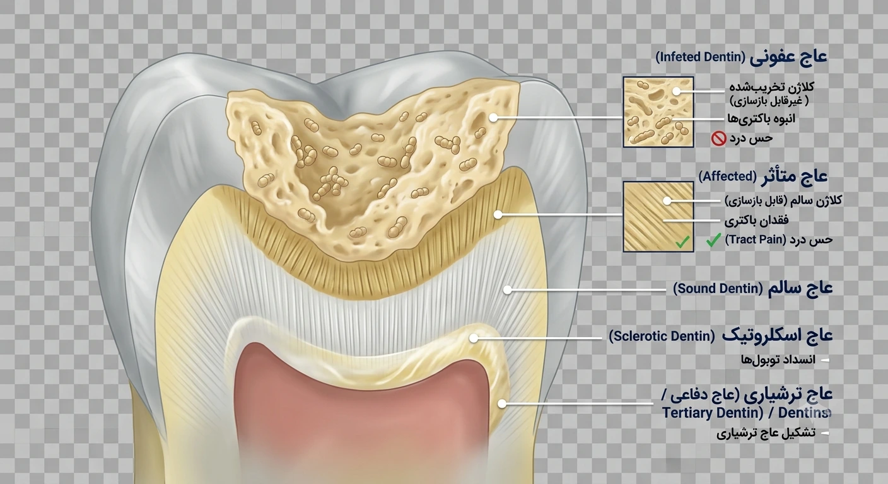

نسخه استخراجشده؛ ترجمه یا تأیید علمی انجام نشده است. وضعیت: captured
قدم 1 · theory
راز حفرات عمیق (Infected vs. Affected)

🔴 عاج عفونی (Infected Dentin):
ویژگی: نرم، چرمی، مملو از باکتری، کلاژن کاملاً تخریبشده و بدون حس درد.
دستورالعمل:حتماً باید به طور کامل برداشته شود.
🟢 عاج متأثر (Affected Dentin):
ویژگی: سفتتر، عاری از باکتری، شبکه کلاژن سالم و دارای حس درد (به دلیل نزدیکی به زوائد سلولی زنده).
دستورالعمل:برای حفظ حیات پالپ و ریمینرالیزاسیون حتماً باید حفظ شود.
قدم 2 · question
اصل طراحی فرزهای پلیمری انتخابی برای برداشت عاج پوسیده چیست؟
۰۱
با رنگ زدن باکتریها
۰۲
سختی کنترلشدهٔ پلیمر برای برداشت ترجیحی عاج نرمتر و کاهش برداشت عاج سختتر
۰۳
با افزایش pH دهان
۰۴
با عصبکشی سریع دندان
قدم 3 · question
برای باند کردن به عاج اسکلروتیک، کدام اصل دربارهٔ آمادهسازی و اچ درست است؟
۰۱
هیچ تفاوتی با عاج نرمال ندارد
۰۲
پروتکل باید متناسب با سیستم ادهزیو و دستور سازنده باشد؛ افزایش زمان اچ برای همهٔ موارد الزامی نیست
۰۳
عدم استفاده از اسید اچ روی این بافت
۰۴
در تمام موارد فقط Self-etch به کار ببریم، بدون توجه به دستور سازنده و وضعیت سطح
قدم 4 · question
در برداشت انتخابی پوسیدگی عمیقِ مناسب این روش، چرا محیط حفره و حاشیههای ترمیم باید بستر محکمی برای سیل قابل اعتماد داشته باشند؟
۰۱
برای افزایش زیبایی ترمیم
۰۲
برای کاهش نشت و دسترسی بیوفیلم باقیمانده به مواد غذایی و کمک به کنترل ضایعه
۰۳
برای تراش سریعتر دیواره جانبی
۰۴
برای افزایش قطر دندان
قدم 5 · question
در Affected Dentin، کریستالهای املاح میتوانند بر روی داربست کلاژنی سالم رسوب کرده و عاج را ریمینرالیزه کنند.
۰۱
صحیح
۰۲
غلط
قدم 6 · question
در تقسیمبندی کلاسیک، عاج متأثر (Affected) با حفظ نسبی داربست کلاژنی میتواند ظرفیت ریمینرالیزاسیون داشته باشد؛ این اصطلاح استریل بودن قطعی آن را ثابت نمیکند.
۰۱
صحیح
۰۲
غلط
قدم 7 · question
بیماری با حفره عمیق و بدون علائم پالپیت مراجعه کرده است. با توجه به ریسک بالای اکسپوز پالپ، کدام تکنیک نوین جایگزین Stepwise Excavation توصیه میشود؟
۰۱
برداشت انتخابی (Selective Excavation) و مهروموم دائمی
۰۲
عصبکشی فوری
۰۳
تراش کامل تا عاج سخت
۰۴
روکش کامل دندان
قدم 8 · question
بیمار با پوسیدگی عمیق، درد خودبهخودی و درد ماندگار پس از سرما مراجعه کرده است. پیش از تصمیم به برداشت انتخابی و ترمیم ساده، کدام اقدام مناسبتر است؟
۰۱
ترمیم ساده را بدون بررسی بیشتر کافی بدانیم، چون وجود درد سلامت پالپ را اثبات میکند
۰۲
ارزیابی کامل پالپی و پریآپیکال و انتخاب درمان متناسب؛ ترمیم ساده را نباید صرفاً با هدف ریمینرالیزاسیون کافی دانست
۰۳
همهٔ عاج متأثر را برداریم و بدون ارزیابی پالپ، آمالگام بگذاریم
۰۴
عاج باقیمانده را صرفاً با هیپوکلریت حل کنیم و تشخیص پالپی را کنار بگذاریم
قدم 9 · question
در برداشت انتخابی پوسیدگی عمیق، هنوز بخشی از محیط حفره رنگ آشکارساز میگیرد. اقدام مناسب برای تعیین نیاز به برداشت بیشتر چیست؟
۰۱
قوام و کفایت بستر سیل در محیط و خطر اکسپوز در عمق را ارزیابی کنید؛ حذف همهٔ رنگگیریها هدف مستقل نیست
۰۲
همهٔ دیوارهها را بدون بررسی قوام حفظ و فقط کف پالپی را عمیقتر کنید
۰۳
به رنگنگرفتن کف اکتفا کنید و محیط حفره را بررسی نکنید
۰۴
همهٔ کف و دیوارهها را بدون توجه به عمق تا حذف کامل رنگ بتراشید